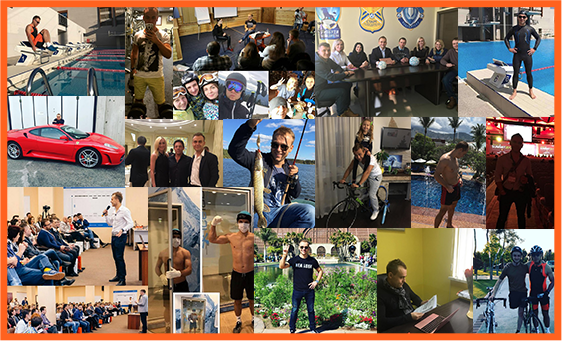

Наконец-то, раскрыта технология как предпринимателю управлять прибыльным бизнесом (и даже не одним), при этом оставаясь свободным, здоровым и довольным жизнью, без стресса и необходимости жить на работе!
- Представьте, как Вы с удовольствием просыпаетесь утром и с самых первых минут дня точно знаете, что нужно делать сегодня, чтобы сделать ваш бизнес еще более прибыльным…
- За утренним кофе Вы смотрите статистику по продажам и с чувством гордости видите, что по сравнению с прошлым месяцем она выросла значительно, так как Вы внедрили новые системы в продажах и маркетинге…
- Вы с нетерпением ждете встречи с Вашей командой, чтобы обсудить новый способы давать больше ценности вашим клиентам и мотивировать их возвращаться к вам чаще и чаще.
- При этом вы знаете, что уже в 4 часа дня будете свободны, чтобы заняться спортом, а потом провести вечер с семьей… А в следующем месяце у Вас запланирован отпуск в теплой стране, о которой вы так давно мечтали…
- Не так давно вы бы провели этот день (и многие следующие) в стрессе, «тушении пожаров», работая слишком долго и слишком упорно, почти без поддержки, реагируя на проблемы, вместо того, чтобы создавать успех.
- Вы улыбаетесь, понимая, как далеко вы продвинулись и как много побед впереди…
- Приветсвую, меня зовут Иван Зимбицкий и в начале карьеры предпринимателя я тоже работал по 12-18 часов в день, как и вы, возможно, сейчас… Однако я общался с многими западными предпринимателями и видел, что они успешнее меня и при этом свободны и наслаждаются жизнью, а их бизнес растет…
- Чтобы раскрыть их секрет я инвестировал в обучение у наставников из США более $15 000. И мне удалось «взломать» код технологии как создавать «саморазвивающийся» бизнес, который дает деньги и свободу.
- Сейчас у меня 3 бизнеса.
- При этом я путешествую по 4 месяца в году, обучаюсь, провожу время с семьей, обучаю команду, провожу мероприятия на 100-150 человек, занимаюсь спортом каждый день и интенсивно готовлюсь к прохождению дистанции Ironman 70.3 (это 1,9 км плавания, 90 км на велосипеде и 21,1 км – бег).
